EasyVeep - Lift (felvonó) szimuláció
Feladat leírása és egyszerűsítések:
A rendszer egy 3 szintes (földszint, 1. emelet és 2. emelet) lift működését szimulálja. A fülkében nincs súlyérzékelő, sem Vészleállító (Stop) gomb. Minden hívógomb folyamatosan aktív, azonban a fülkében lévő hívógombok magasabb prioritással rendelkeznek a külső hívásokkal szemben.
A rendszer bemenetei (érzékelők és gombok):
- 3 érzékelő/gomb a lift hívására az adott szintekről (földszint, 1. és 2. emelet)
- 3 érzékelő/gomb a fülkében a célállomás kiválasztására
- 3 érzékelő a lift aktuális pozíciójának (emeletének) azonosítására
- 3 érzékelő annak visszajelzésére, hogy az adott szinteken az ajtók megfelelően be vannak-e zárva
A rendszer kimenetei (végrehajtók):
- 1 végrehajtó a lift felfelé mozgatására
- 1 végrehajtó a lift lefelé mozgatására
- 3 végrehajtó az ajtók nyitására a megfelelő szinteken (földszint, 1. és 2. emelet)
Megvalósítás:
S7 - 1200 PLC-n LAD programozási nyelvben
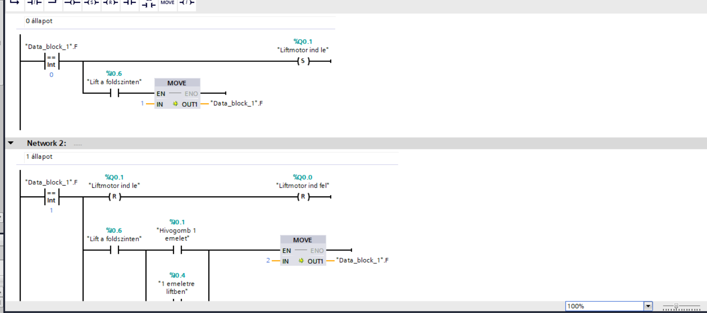
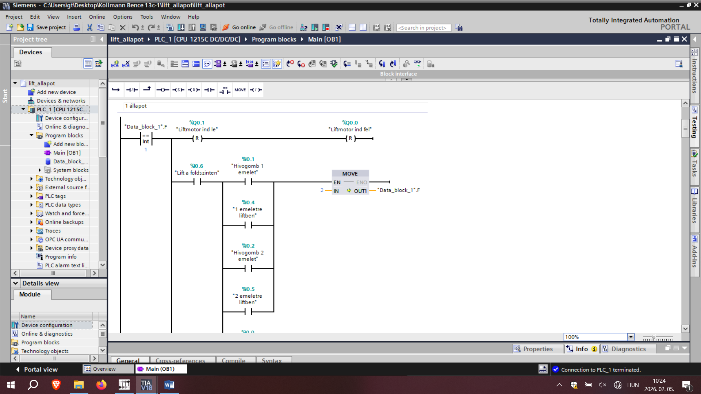
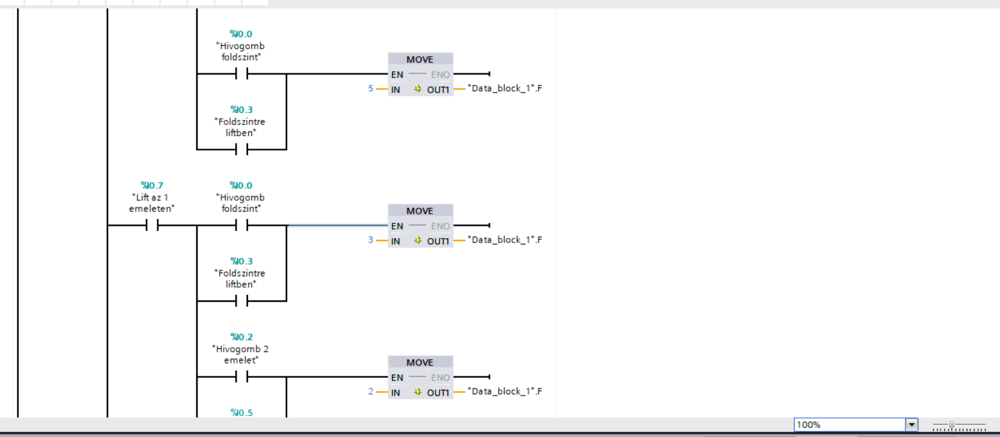
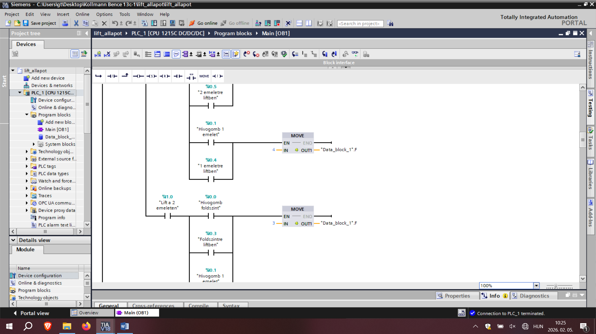
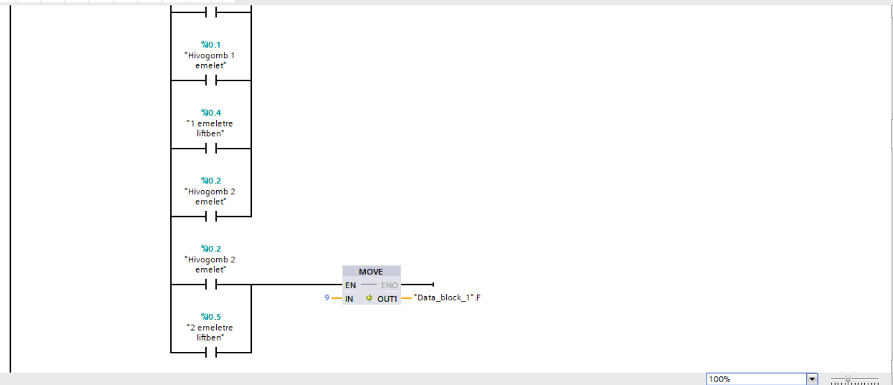
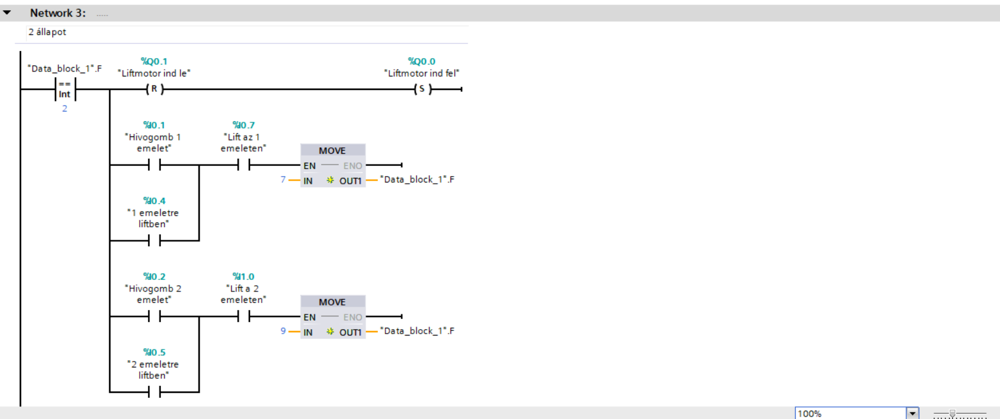
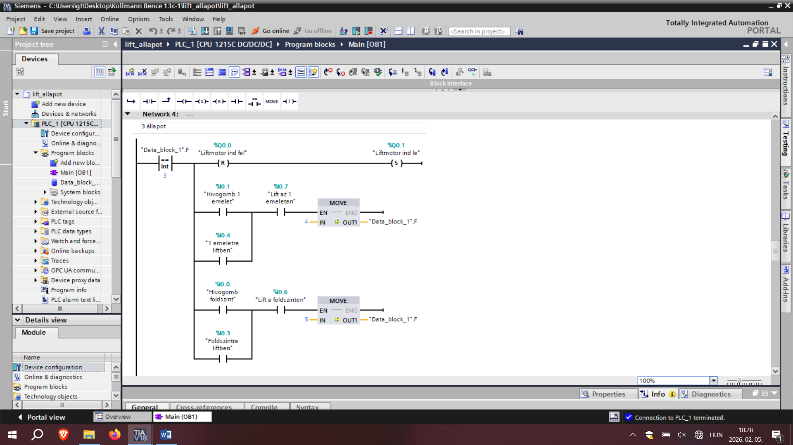
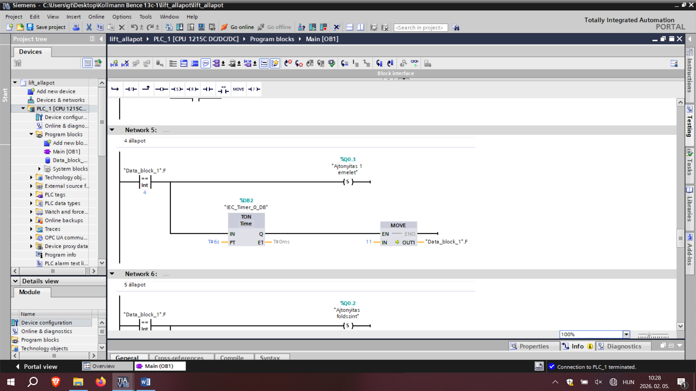
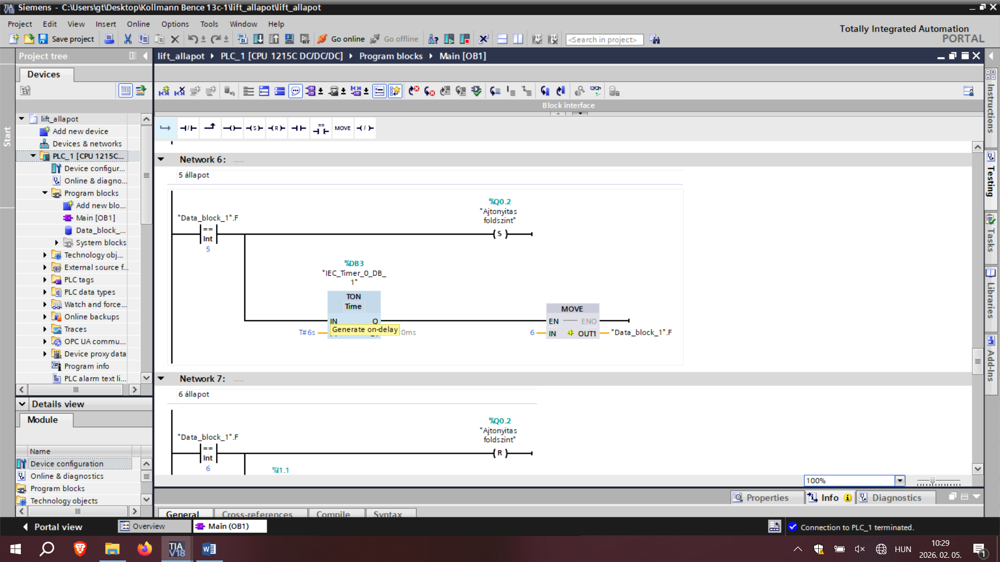
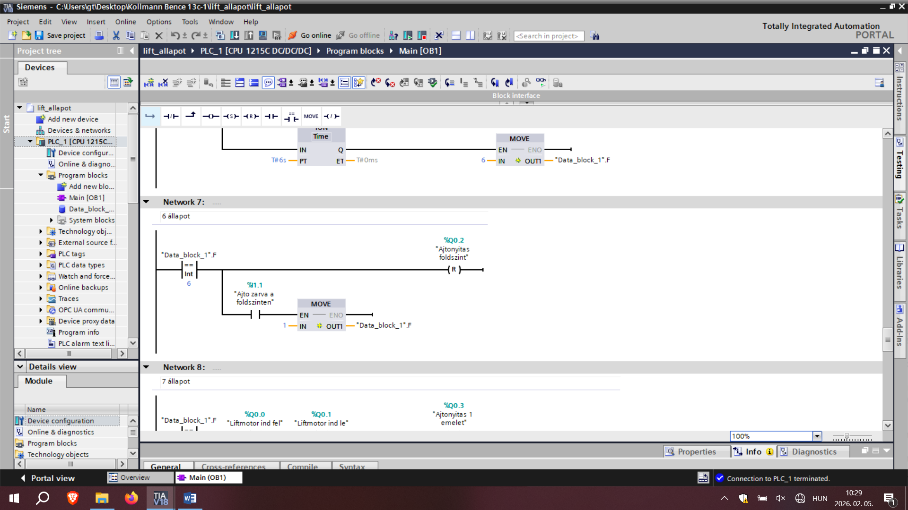
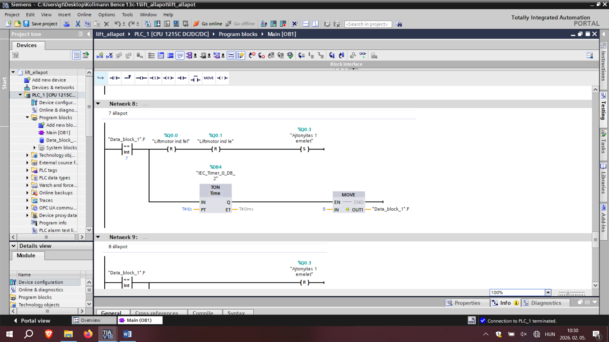
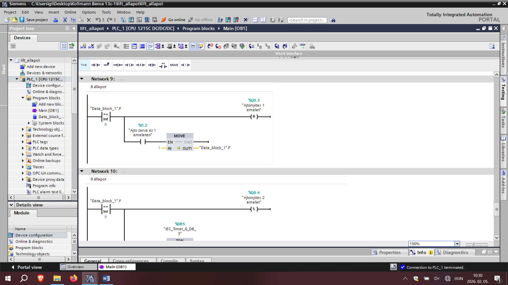
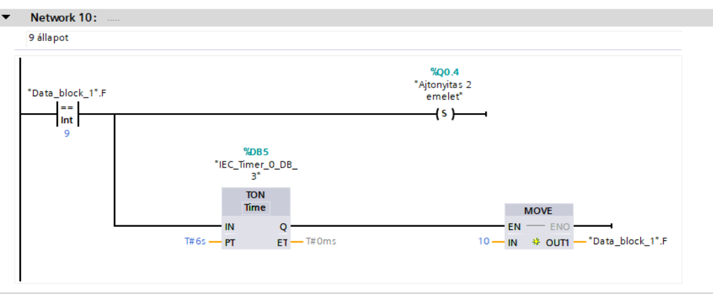
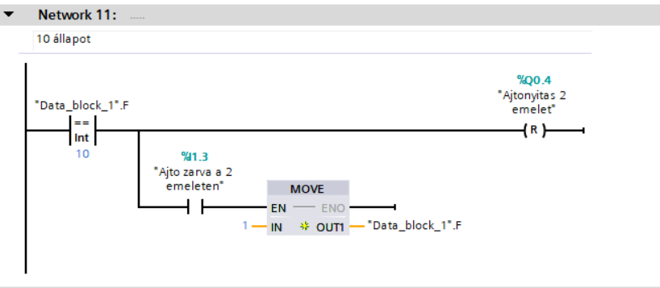
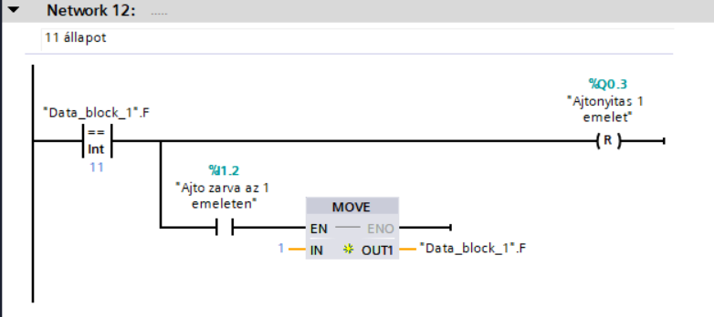
A vezérlés logikája és felépítése:
A háromszintes lift vezérlése egy összetett, memóriatárolókra (Set/Reset) és reteszelésekre épülő logika alapján működik. A programnak nemcsak a mozgás irányát kell meghatároznia, hanem kezelnie kell a hívások prioritását és a biztonsági feltételeket is.
- Hívások tárolása és Prioritáskezelés: Mivel a gombnyomások csak pillanatnyi jelek, a rendszer SR (Set/Reset) tárolókkal jegyzi meg a hívásokat. A feladatkiírásnak megfelelően a fülkében leadott célállomás-igények (belső hívások) magasabb prioritást élveznek. Ezt a program szoftveres reteszeléssel (kizárással) oldja meg: ha van aktív belső hívás, a külső hívógombok jelei várakozó státuszba kerülnek, amíg a fülkeparancs ki nem fut.
- Mozgási irány meghatározása: A PLC folyamatosan összehasonlítja a tárolt célállomást a lift aktuális helyzetét jelző szenzorokkal (%I0.6, %I0.7, %I1.0). Ha a célállomás magasabban van, mint az aktuális pozíció, a "Liftmotor ind fel" (%Q0.0) aktiválódik. Ha alacsonyabban, akkor a "Liftmotor ind le" (%Q0.1) kimenet kapcsol be.
- Biztonsági reteszelés (Ajtók): A mozgás alapfeltétele a biztonság. A fel és le mozgás kimenetei elé sorosan be vannak kötve az ajtók zártságát figyelő szenzorok (%I1.1, %I1.2, %I1.3). A motor csak akkor kaphat áramot, ha az összes szinten zárt állapotot érzékel a rendszer (AND kapcsolat).
- Megállás és Ajtónyitás: Amikor a lift eléri a célállomást (az adott szint helyzetérzékelője aktívvá válik), a program törli (Reset) a mozgás parancsot és a tárolt hívást. A motor leállása után a vezérlés kiadja a parancsot a megfelelő szint ajtónyitó végrehajtójára (%Q0.2 - %Q0.4).